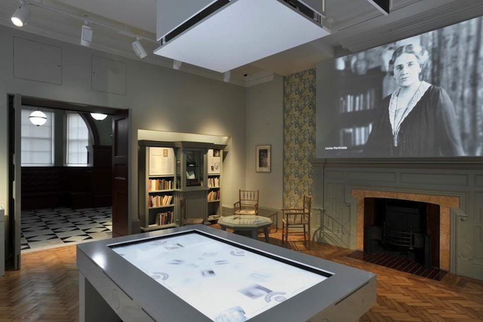
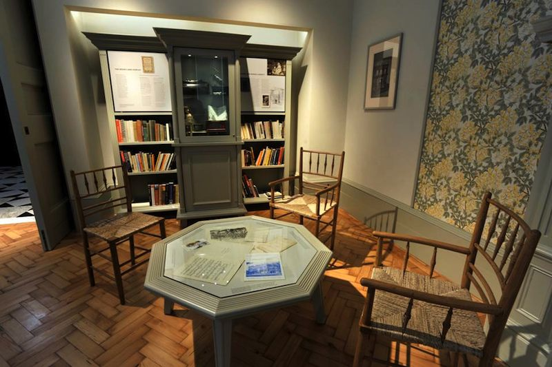

EGA for Women
A lasting memorial in the Elizabeth Garrett Anderson Gallery at the UNISON Centre
The Elizabeth Garret Anderson Gallery
The Elizabeth Garrett Anderson Gallery tells the story of the first woman to practise as a doctor in Britain, setting her struggle in the context of 19th and 20th century social and political history.

Using a variety of media – words, photographs, projections, video and sound – the Gallery brings to life the work of the Elizabeth Garrett Anderson Hospital, its doctors, nurses and patients, bringing the story up-to-date by providing a platform for members of UNISON, its new occupants, to voice their thoughts and concerns.

The original Entrance Hall to the hospital has been restored to its original 1890 appearance and the main gallery features the fireplace designed for the room by Elizabeth Garrett Anderson’s sister, Agnes Garrett.
The gallery has all the latest technology with interactive displays, accessible for use by the disabled. There is a quiet corner with books by and about medical women and social reformers which you can read during your visit.